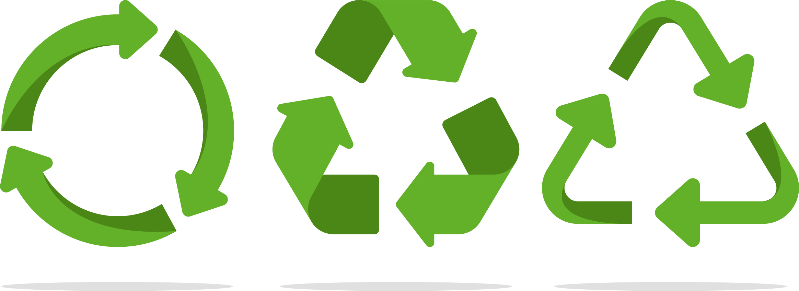

5 DICAS SUSTENTAVEIS
a agricultura sustentável desempenha um papel crucial na conservação dos recursos naturais e na preservação do meio ambiente, buscando o equilíbrio entre produtividade e preservação dos ecossistemas
Segundo o Instituto Akatu, se você tirar um minuto do tempo do seu banho todos os dias, em 10 anos, você tera economizado água suficiente para uma familia de quatro pessoas tomar seu banho diário por seis meses (21.960 litros) Um minuto a menos no banho também, em um mês, economiza o suficiente para carregar 750 vezes o celular durante uma hora.
Praticamente todos os materiais podem ser reaproveitados ou valorizados por meio da reciclagem e compostagem. Mas se atente na separação correta "Por exemplo, se jogarmos no mesmo coletor as sobras de alimento e as embalagens, impossivel reciclar esse material" Separando os residuos entre reciclaveis e rejeitos e destinando cada um na sua coleta específica, reduzimos o que é destinado aos aterros sanitários, protegemos o planeta e geramos renda e emprego
As sacolas de tecido servem para diversas funções e podem ser combinadas a saquinhos de papel caso seja necessário numa compra ao supermecado. Sempre que possivel, opte por produtos embalados em papel aos oferecidos em plásticas.
Os produtos orgânicos trazem benefícios à saúde e à natureza. Além de serem mais saudáveis, a sua produção é um processo sustentável e respeita o ciclo de vida do meio ambiente e dos animais, evitando a contaminação da água, do solo e da vegetação.
Muitas vezes, algo que não é mais útil para você pode ser valioso para outra pessoa. Quando colocamos um produto à venda, como roupas ou utensílios de casa, aumentamos o ciclo de vida dele e contribuímos com a preservação do meio ambiente. Organizações não governamentais (ONGs), orfanatos e instituições de caridade arrecadam todo tipo de bem. Além disso, existem sites que ajudam nessa missão. Outra possibilidade é disponibilizar os materiais em bazares de artigos usados.